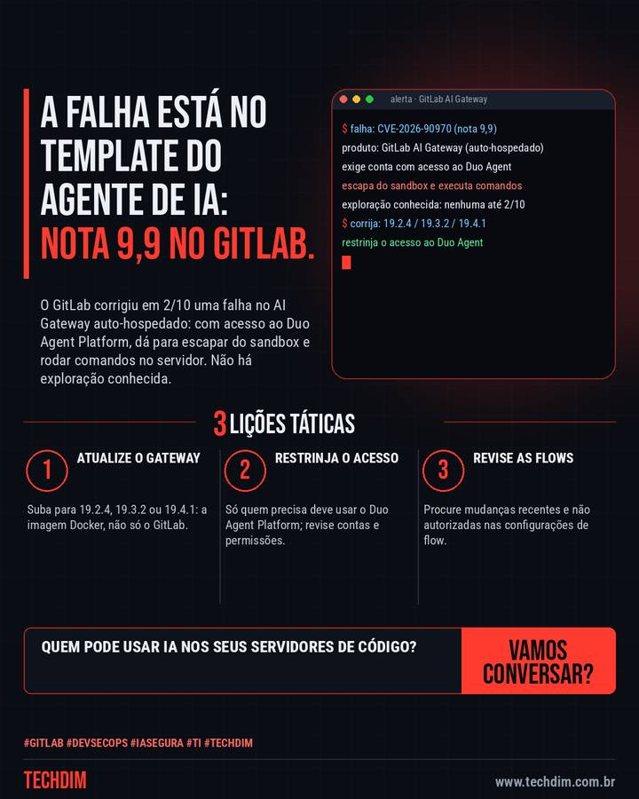

Alerta de segurança
GitLab corrige falha crítica (nota 9,9) no AI Gateway que permite executar comandos
O GitLab corrigiu em 2/10 uma falha no AI Gateway auto-hospedado: com acesso ao Duo Agent Platform, dá para escapar do sandbox e rodar comandos no servidor. Não há exploração conhecida.

O que aconteceu
- A CVE-2026-90970 (nota 9,9) atinge o AI Gateway auto-hospedado do GitLab: quem tem acesso ao Duo Agent Platform escapa do sandbox de templates e executa comandos
- Afetadas: da 18.1.6 até antes da 19.2.4, da 19.3 até antes da 19.3.2 e a 19.4.0; correções 19.2.4, 19.3.2 e 19.4.1. Atualize a imagem Docker do gateway
- Não há exploração conhecida até 2/10. Atualize, restrinja quem acessa o Duo Agent Platform e revise mudanças recentes nas configurações de flow
Ferramenta de IA no servidor de código também precisa de patch e de acesso mínimo. A TECHDIM cuida disso.
Por que importa
Falha crítica em ferramenta de IA integrada ao servidor de código; vale para empresas que hospedam o próprio GitLab.
Como se proteger
- Atualize o gateway. Suba para 19.2.4, 19.3.2 ou 19.4.1: a imagem Docker, não só o GitLab.
- Restrinja o acesso. Só quem precisa deve usar o Duo Agent Platform; revise contas e permissões.
- Revise as flows. Procure mudanças recentes e não autorizadas nas configurações de flow.
Fontes consultadas
Mais do Radar de hoje
Este texto resume as fontes citadas na data de publicação. Confira sempre o aviso oficial do fabricante antes de agir em produção.